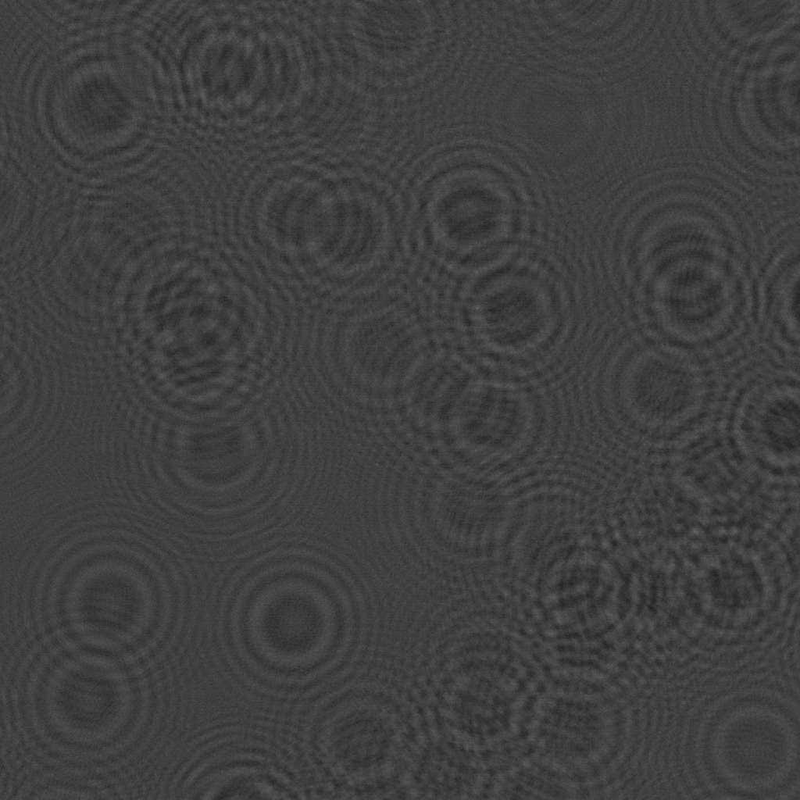

ParticleHolography
Documentation for ParticleHolography.
A package for particle measurement using inline holography.
This package is under development, and none of the functions are guaranteed to work.
Installation
using Pkg
Pkg.add(url="https://github.com/dainakai/ParticleHolography.jl.git")Quick Demonstration
GPU-accelerated Gabor reconstruction
The code below is an example of performing inline holographic reconstruction using an NVIDIA GPU (CUDA.jl). Your computer needs to be ready to use NVIDIA GPUs with CUDA.jl. It reconstructs a volume of size datlenΔx x datlenΔx x slicesΔz when the camera plane is considered as the xy plane and the direction perpendicular to the camera plane, which is the optical axis, is the z axis. Furthermore, it creates an xy projection image of the reconstructed volume by taking the minimum value of the z axis profile at each pixel in the xy plane of the reconstructed volume. The operation of extracting the xy projection image from the volume can be expressed by the following equation:
\[\mathrm{xyproj}(x, y) = \min_{z} \left\{ \mathrm{rcstvol}(x, y, z) \right\}\]
Specify the hologram you want to reconstruct and the parameters, and save the projection image as xyprojection.png.
using ParticleHolography
using CUDA
using Images
# Load hologram
img = load_gray2float("holo.png")
# Parameters
λ = 0.6328 # Wavelength [μm]
Δx = 10.0 # Pixel size [μm]
z0 = 220000.0 # Optical distance between the hologram and the front surface of the reconstruction volume [μm]
Δz = 100.0 # Optical distance between the reconstructed slices [μm]
datlen = 1024 # Data length
slices = 500 # Number of slices
# Prepare the transfer functions
d_sqr = cu_transfer_sqrt_arr(datlen, λ, Δx)
d_tf = cu_transfer(z0, datlen, λ, d_sqr)
d_slice = cu_transfer(Δz, datlen, λ, d_sqr)
# Reconstruction
d_xyproj = cu_get_reconst_xyprojection(cu(ComplexF32.(sqrt.(img))), d_tf, d_slice, slices)
# Save the result
save("xyprojection.png", Array(d_xyproj)) # Copy the d_xyproj to host memory with Array()

ParticleHolography.cu_get_reconst_xyprojectionParticleHolography.cu_transferParticleHolography.cu_transfer_sqrt_arrParticleHolography.load_gray2float
ParticleHolography.load_gray2float — Functionload_gray2float(path)Load a grayscale image from a file and return it as a Array{Float32, 2} array.
Arguments
path::String: The path to the image file.
Returns
Array{Float32, 2}: The image as a Float32 array.
ParticleHolography.cu_transfer_sqrt_arr — Functioncu_transfer_sqrt_arr(datlen, wavlen, dx)Create a CuArray of size datlen x datlen with the values of the square-root part of the transfer function.
Arguments
datlen::Int: The size of the CuArray.wavlen::AbstractFloat: The wavelength of the light.dx::AbstractFloat: The pixel size of the hologram.
Returns
CuArray{Float32,2}: The square-root part of the transfer function.
ParticleHolography.cu_transfer — Functioncu_transfer(z0, datLen, wavLen, d_sqr)Create a CuArray of size datLen x datLen with the values of the transfer function for a given propagated distance z0. d_sqr can be obtained with cutransfersqrtarr(datlen, wavlen, dx).
Arguments
z0::AbstractFloat: The distance to propagate the wave.datLen::Int: The size of the CuArray.wavLen::AbstractFloat: The wavelength of the light.d_sqr::CuArray{Float32,2}: The square of the distance from the center of the hologram, obtained withcutransfersqrtarr(datlen, wavlen, dx).
Returns
CuArray{ComplexF32,2}: The transfer function for the propagation.
ParticleHolography.cu_get_reconst_xyprojection — Functioncu_get_reconst_xyprojectin(light_field, transfer_front, transfer_dz, slices)Get the XY projection of the reconstructed volume from the light field light_field using the transfer functions transfer_front and transfer_dz. transfer_front propagates the light field to the front of the volume, and transfer_dz propagates the light field between the slices. slices is the number of slices in the volume.
Arguments
light_field::CuArray{ComplexF32,2}: The light_field to reconstruct. In Gabor's holography, this is the square root of the hologram.transfer_front::CuArray{ComplexF32,2}: The transfer function to propagate the light field to the front of the volume.transfer_dz::CuArray{ComplexF32,2}: The transfer function to propagate the light field between the slices.slices::Int: The number of slices in the volume.
Returns
CuArray{Float32,2}: The XY projection of the reconstructed volume.
CPU-based reconstruction
Preparing...